Creating a familiar web application
by Martin Schreiner, Mobile Application Developer, Netbiscuits
Local application server, externally accessible
The mobile Internet is one of the most important growth markets of the future. For developers, however, the medium does have its pitfalls. In contrast to the "PC Web", they are faced with a virtually incalculable number of hardware and software platforms in the mobile channel. This fragmentation might encourage some to limit their projects to specific platforms and end devices. The all too frequent result is an application developed with great expense, which can only be displayed optimally on a very limited number of devices.
In order to develop one application for all end devices, a new technology platform is required that automatically adapts the mobile websites and content to the specific form factors and software environments of the various mobile devices and as many of the world’s mobile phones as possible. The following article describes the development of a mobile website with the aid of NetBeans and Netbiscuits, a software platform that enables the development and delivery of mobile websites for virtually all end devices worldwide.
Basically, there is no fundamental difference between the development of a mobile portal and a standard web application. In the simplest form, an XHTML page is created with a very modest design, which looks good, above all, on low resolution devices. However, this would exclude older devices that can only interpret WML based on the WAP protocol instead of XHTML. Other problems, such as the lack of support for certain graphics formats on some devices, are also not taken into account. Consequently, manual optimization for a broad set of mobile devices quickly becomes very expensive and, in the best-case scenario, requires a database with information on all devices that are supported.
When creating a mobile website using BiscuitML and delivering it via the Netbiscuits platform, the latter makes adjustments for virtually all available end devices. This means the developer can create a page using an XML-compliant markup language, without having to worry about the supported output or graphics formats. The device database underlying the Netbiscuits platform contains all the essential information on more than 6,000 end devices worldwide.
Although newer devices no longer have any limitations when it comes to XHTML support or various graphics formats, it still makes sense to include device-specific differences on the portal pages that are created. For instance, when using Rich Internet Features (RIF) or incorporating multimedia content (e.g. video streaming vs. video download).
The development of a mobile portal is illustrated below using a practical example. For this purpose, a popular Java web project will be created in NetBeans first of all. JSP pages will be created later on for the content, which will deliver BiscuitML. One of the web servers integrated into NetBeans can be used for this purpose without the need for any special configuration. The individual steps are described in detail in the following sections.
Creating a familiar web application
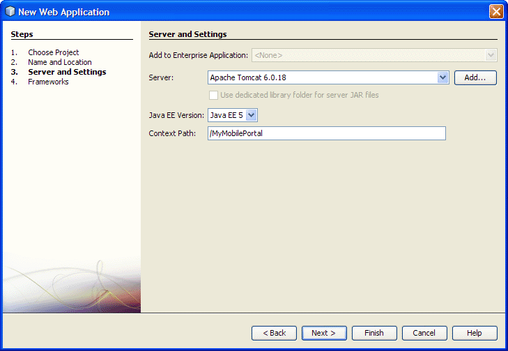
Select
the desired server as well as the content path
In order to construct a new portal page (here: category_1.jspx), a JSP file must first be created in the Web Pages folder. We will use the XML model (JSPX) for our example, the standard model would also work though. It is important, however, to use text/xml as the content type and UTF-8 encoding in order to ensure international compatibility. Furthermore, the file in the web.xml must be set as a welcome file, so that it will be shown as the first page when accessing the portal later on.
<welcome-file-list>
<welcome-file>category_1.jspx</welcome-file>
</welcome-file-list>
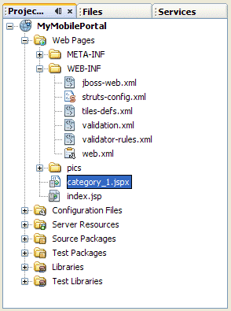
Project structure after creating the first page
The following code shows a blank page template with a simple container structure:
<?xml version="1.0" encoding="UTF-8"?>
<jsp:root xmlns:jsp="http://java.sun.com/JSP/Page" version="2.0">
<jsp:directive.page contentType="text/xml" pageEncoding="UTF-8"/>
<page title="My Mobile Portal" paging="true">
<container>
<column>
<!-- content biscuits -->
</column>
</container>
</page>
</jsp:root>
Listing: category_1.jspx
Typically, a page contains a header, content and a footer. In most cases, navigation elements are located in the header or footer area so that the desired content can be called up. Texts, images, rich media content, such as video or maps, as well as tables or forms can be displayed and linked to in the content area.
Netbiscuits provides special "biscuits" for all common content and functional elements of a website. Each biscuit has a special number of degradation levels, which ensure the content of each individual biscuit can be optimally adapted to virtually any end device. This ensures that the one and the same mobile website will be displayed optimally on both the latest iPhone as well as on the oldest Motorola Razr.
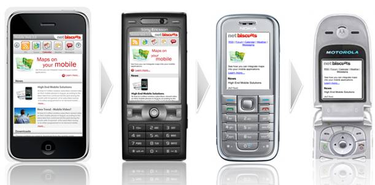
Degradation of a mobile website across several end devices
The distribution of content across several pages is something else that the developer does not need to worry about. If the requesting end device encounters any limitations with regard to the maximum data volume that can be displayed, the Netbiscuits platform automatically inserts a navigation element for paging and distributes the content across several sub-pages.
The Code Template functionality of NetBeans is recommended in order to ensure the desired content can be created quickly and easily. Several templates can be applied via the Code Templates tab under Tools -> Options -> Editor. These can be inserted into the page later on using a key combination. If you create your own template for the common biscuits, this will not only reduce the amount of writing considerably when creating the JSP pages, the risk of errors will also be limited because the most important attributes will already have been created in the nodes with the correct names, and all you will need to do is assign values.
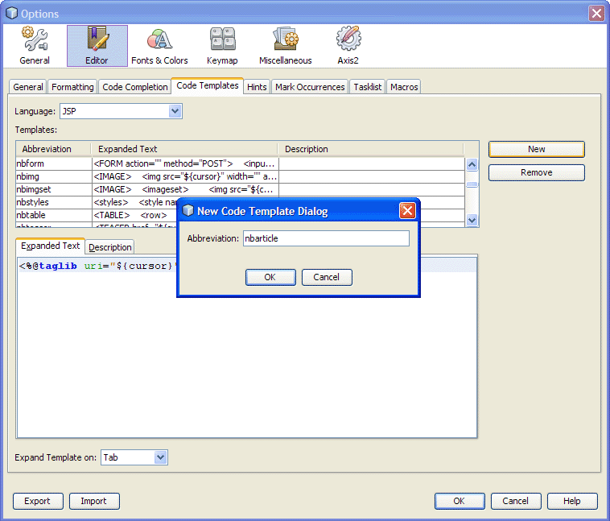
Creating
a new template
To create such templates, select JSP as the programming language in the above-mentioned window, then create an empty template using the New button (a prefix, such as "nb", could be used in order to ensure consistent naming of the biscuit templates : nbtext, nbarticle...). All you need to do now is insert and save the code of the desired biscuit as "expanded text". The BiscuitML reference (http://www.netbiscuits.com/biscuitmlreference) provides information on how to complete this. Each individual developer can decide whether the content and attributes of the biscuit will remain empty or if default values will be allocated to them.
The templates that have been created will be available after restarting NetBeans.
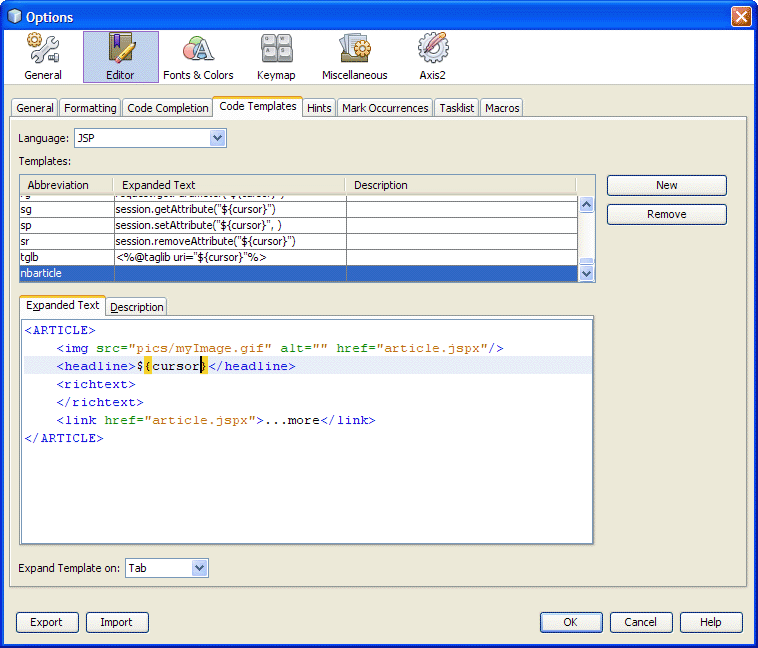
Creating template text
The example illustrated in this article should contain a home page with a header and footer as well as a few teasers as content. The latter will be linked to article pages later on in order to illustrate the navigation between pages. A few teasers will be inserted into the page first of all via the code template; this is completed by entering the predefined abbreviation for the teaser template and pressing the tab key. All you need to do now is enter the actual values and attributes; the page will then contain its initial content.
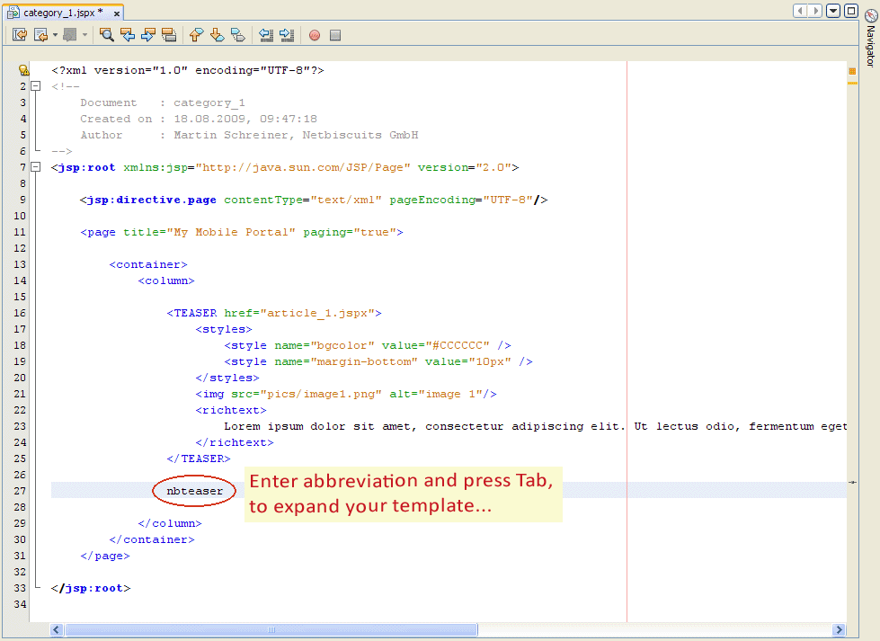
The first portal page (click to enlarge)
If parts of the code are to be used equally on several pages, these segments should be placed in separate files and incorporated using the Include command for reasons of structuring and maintainability. As a result of this, subsequent alterations to the design or changes to the text or links need only be made once, they will however affect the entire portal.
To that end, the '/includes' subfolder will be created in Web Pages. In our example, we will create a file with the name of footer.jspx in this folder, which contains the following code:
<?xml version="1.0" encoding="UTF-8"?>
<jsp:root xmlns:jsp="http://java.sun.com/JSP/Page" version="2.0">
<!-- Use items below as footer on all pages -->
<PAGEBEGINFOOTER />
<!-- Footer menu -->
<PIPEDMENU>
<items>
<item>
<link href="category_1.jspx">Home</link>
</item>
<item>
<link href="imprint.jspx">Imprint</link>
</item>
<item>
<link href="contact.jspx">Contact</link>
</item>
</items>
</PIPEDMENU>
<!-- Copyright part -->
<PAGEFOOTER>
<item position="3">
<text>©Netbiscuits, 2009.</text>
</item>
</PAGEFOOTER>
</jsp:root>
Listing: footer.jspx
This code generates two biscuits, which should be displayed as the footer below the page’s current content (a small menu and the portal’s copyright reference in our example). Furthermore, the <PAGEBEGINFOOTER> tag will be used to ensure that all subsequent biscuits will be placed as footers below the separated content for all paginated pages. That way, every partial page will have the same footer, not only the last one.
After that, an Include command must be placed in the home.jspx, below the previously created teasers, in order to ensure the footer’s content is also inserted on the page:
<jsp:include page="includes/footer.jspx" />
The same steps must then be repeated for the header, the first page will then be complete.
The page’s design is defined via style attributes that are based on cascading style sheets (CSS). They can be assigned to both complete pages as well as individual biscuits. Depending on the specific biscuit in use, additional attributes are also available that enhance the standard style set (e.g. active color with tabbed menus or bgcolor2/bgcolor3 for alternating background colors with lists).
<styles>
<style name="padding-top" value="10px" />
<style name="padding-bottom" value="10px" />
<style name="margin-bottom" value="10px" />
<style name="color" value="#0000FF" />
<style name="link-color" value="#0000FF" />
<style name="text-align" value="center" />
<style name="active-color" value="#FFFFFF" />
<style name="active-bgcolor" value="#C71722" />
<style name="active-border" value="#C71722" />
<style name="inactive-color" value="#FFFFFF" />
<style name="inactive-bgcolor" value="#CCCCCC" />
<style name="inactive-border" value="#C71722" />
</styles>
Listing: Menu styles
The code example above shows the design of the header menu. This is illustrated in the following image:
The styled header menu
With regard to page styles, it can be useful — as with some code parties as well — to place them elsewhere and incorporate them using the Include command. That way, the basic design of the page can be adjusted once without having to change each individual page.
After a few more overview and article pages have been added to the project, the sample portal is complete. The markup has been prepared and we can take a look at the first edition.
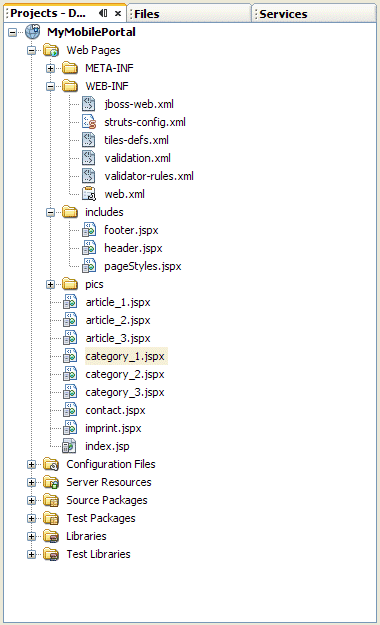
Page structure of the finished example portal
The application can be deployed on an application server integrated into NetBeans, regardless of whether it is Apache Tomcat or the GlassFish server. This means no additional server needs to be installed and configured. The external accessibility of the server is the only prerequisite. If this is not possible (e.g. for security reasons), the project has to be set up on a system, which is accessible from the Netbiscuits platform via http.
When the local application server is used the project can be launched easily using the Run command and the corresponding URL is called up in the browser.
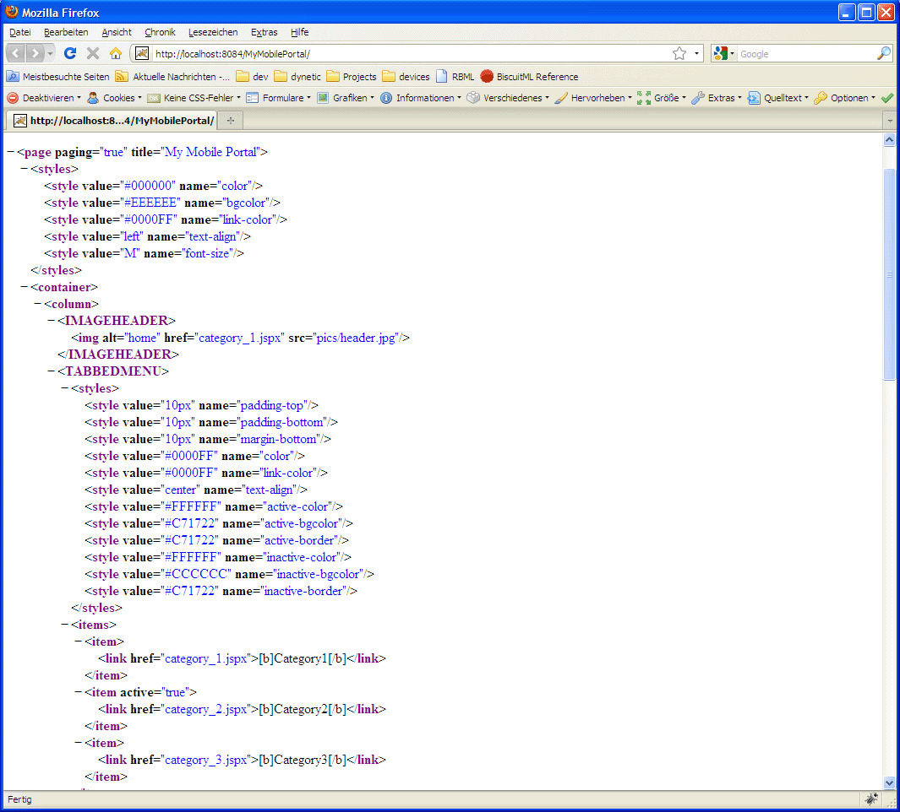
BiscuitML in the browser (click to enlarge)
A Netbiscuits custom application is required to transform the BiscuitML code into the final XHTML or WML for the mobile devices. To complete this, register and log in at www.netbiscuits.com and navigate to My Netbiscuits -> My Applications. A new custom application can now be created via the "Create" tab. Initially, only the name, programming language and backend address need to be entered. If the backend is password protected, the required access data can be stored under "Extended Backend Parameters".
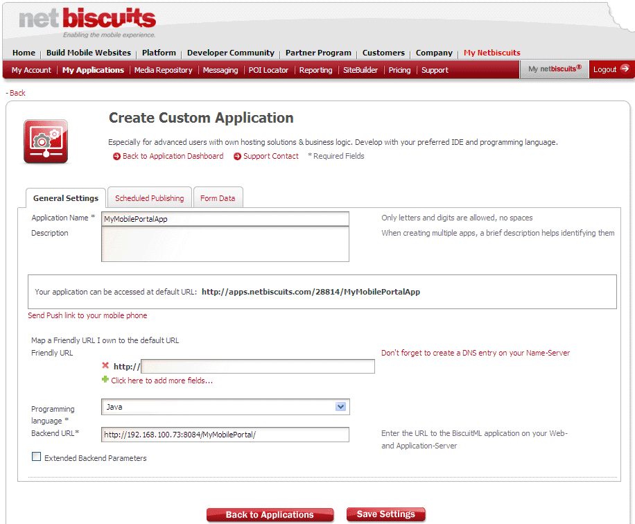
Creating a Netbiscuits custom application (Click to enlarge)
During the development phase, the local server can be entered as the backend with the externally accessible IP address. After saving the custom application, the page is immediately accessible via a default URL. As soon as the application has been set up on the productive server, one or more friendly URLs can also be added when creating the Netbiscuits application. Such URLs can then be used to deliver the application, if the desired URL is registered and points towards Netbiscuits.
If everything has been configured and implemented correctly, the mobile portal page will be retrieved and, depending on the respective end device, may look like this:
|
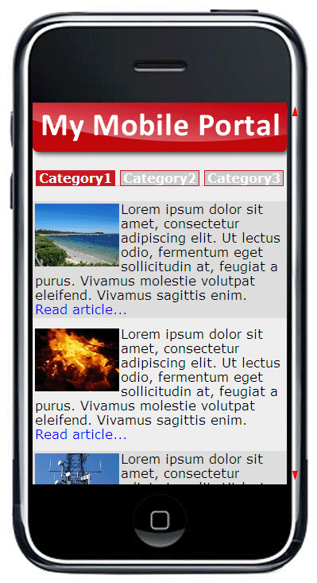 Version Apple iPhone |
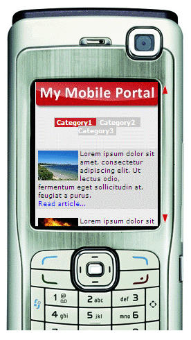 Version Nokia N70 |
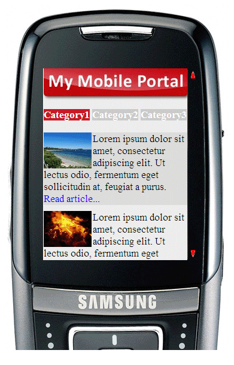 Version Samsung D600 |
The combination of NetBeans and Netbiscuits allows mobile Internet applications to be realized easily and efficiently and delivered optimally to more than 6,000 different end devices worldwide. In doing so, developers can fall back on their experience in the area of web applications and XML, without having to worry about the restrictions posed by different devices. Even testing on various devices is just a pro-forma issue.
At www.netbiscuits.com you can register for a free 30-day trial account. The account will provide you with access to all of the platform’s functionalities. After that, those who do not wish to invest in one of Netbiscuits’ three premium accounts can use the free "developer account", which offers access to all of the technology platform’s basic functions and includes the delivery of 1,000 mobile page visits per month.
Additional articles on designing sophisticated mobile web services with NetBeans and Netbiscuits explain how to prepare content for a mobile portal using Struts, enhance the portal for various languages, implement interfaces to external applications such as content management systems, ad servers or web tracking tools, and develop applications for the latest generation of smartphones using Netbiscuits.
{kind=link}
{kind=link}
{kind=link}